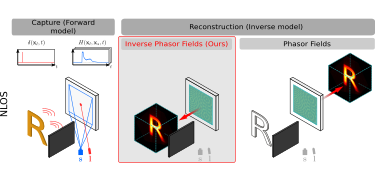
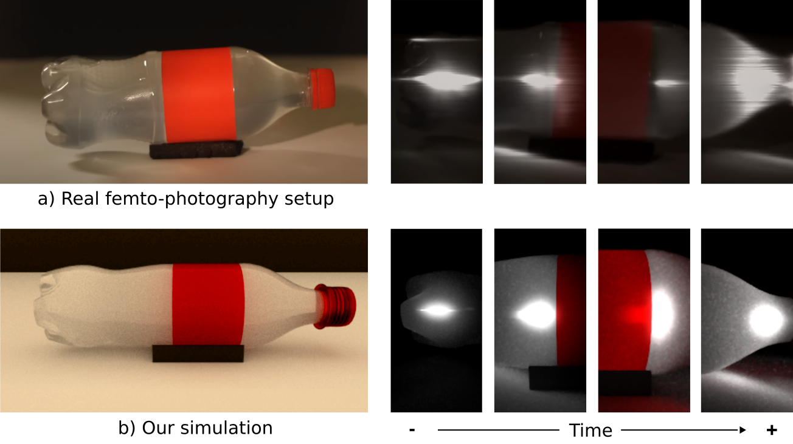
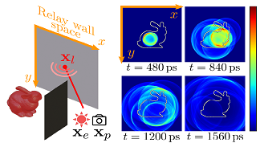

|
Jorge Garcia-Pueyo I'm currently a PhD student in Computer Graphics and Computational Imaging at Graphics and Imaging Lab (University of Zaragoza), supervised by Adolfo Muñoz. My research explores the physics, simulation and applications of light, including advanced light transport simulation, techniques for imaging around corners (non-line-of-sight) and novel touch sensors based on the time-of-flight of the light. I am also interested in problems related to Computer Vision. I am always eager to connect, exchange ideas, and keep learning. Feel free to contact me if you have any questions or simply want to chat. Email / Scholar / Github / LinkedIn / Twitter / Bluesky / Blog |

|
|  |
Forward and Inverse Diffraction in Phasor Fields
Jorge Garcia-Pueyo, Adolfo Muñoz Optics Express, Vol. 33(5), 2025 project page / pdf / code This work reframes Phasor Fields for non-line-of-sight (NLOS) imaging as an inverse diffraction problem. By leveraging the unitary property of diffraction, it introduces a new hidden scene reconstruction method named "Inverse Phasor Fields". |

|
OptoSkin: Novel LIDAR Touch Sensors for Detection of Touch and Pressure
Within Wave Guides
Emmanuel Bacher, Sergio Cartiel, Jorge Garcia-Pueyo, Julija Stoppar, Ales Zore, Roman Kamnik, Ilze Aulika, Andrejs Ogurcovs, Jurgis Grube, Arturs Bundulis, Jelena Butikova, Meldra Kemere, Adolfo Muñoz, Martin Laurenzis IEEE Sensors Journal, Vol. 24(20), 2024 OptoSkin is a novel touch and pressure sensing system based on exploiting frustrated total internal reflection in time-of-flight measurements within flexible waveguides. It shows strong potential for applications like robotic skins. |
|  |
mitransient: Transient Light Transport in Mitsuba 3
Diego Royo*, Miguel Crespo*, Jorge Garcia-Pueyo (Poster) ICCP, 2024 (Best Poster Award) project page / code mitransient is a library adds support to Mitsuba 3 for doing transient simulations, with amazing support for non-line-of-sight (NLOS) data capture simulations. |
|  |
Non-line-of-sight Transient Rendering
Diego Royo, Jorge Garcia-Pueyo, Adolfo Muñoz, Adrián Jarabo Computers & Graphics, Vol. 107 (CEIG), 2022 (Best Paper Award)
We introduce a set of effective subpath sampling techniques targeting transient light transport simulation in occluded scenes, especially focused for non-line-of-sight (NLOS) imaging. |
Miscellanea |
|
This template is a fork of Jon Barron's website. You can find this website's source code here. Do not scrape the HTML from this page itself, as it includes analytics tags that you do not want on your own website — use the github code instead. |